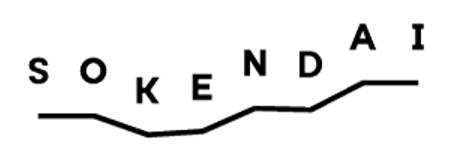

About
Matias Marambio-Jimenez
I'm currently a Special Researcher in

SOKENDAI's Astronomical Science Program at Subaru Telescope, working on developing vision transformer models for wavefront reconstruction using multiple Shack-Hartmann wavefront sensors in the scope of the ULTIMATE-Subaru project. I'm based in Mitaka, Tokyo, Japan. I am being supported by SPRINGNews
| Sept. 2025 | Accepted as Special Researcher in SOKENDAI's Astronomical Science Program at the National Astronomical Observatory of Japan (NAOJ) |
|---|---|
| Sept. 2025 | Graduated from Master's in Electrical Engineering at UC Chile in AIUC |